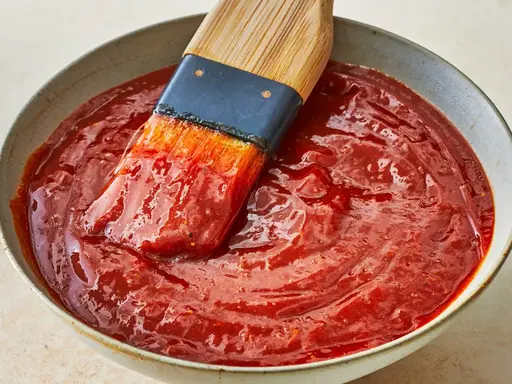

BBQ Sauce

This recipe has a lot of sweetness and spice, so if you're looking for a classic homemade BBQ sauce that's easy to make, look no further.
Ingredients
- 1 ½ cups brown sugar
- 1 ½ cups ketchup
- ½ cup red wine vinegar
- ½ cup water
- 1 tablespoon Worcestershire sauce
- 2 ½ tablespoons dry mustard
- 2 teaspoons paprika
- 2 teaspoons salt
- 1 ½ teaspoons black pepper
- 2 dashes hot pepper sauce
Recipe:
- Gather all ingredients.
- Combine brown sugar, ketchup, vinegar, water, and Worcestershire sauce in a blender. Season with mustard, paprika, salt, pepper, and hot pepper sauce. Blend until smooth.
- Enjoy!